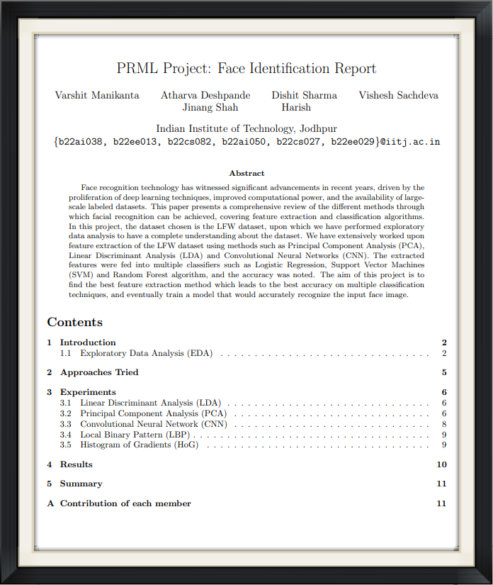

Abstract
Facial recognition technology has witnessed significant advancements in recent years, driven by the proliferation of deep learning techniques, improved computational power, and the availability of large-scale labeled datasets. This paper presents a comprehensive review of the different methods through which facial recognition can be achieved, covering feature extraction and classification algorithms. In this project, the dataset chosen is the LFW dataset, upon which we have performed exploratory data analysis to have a complete understanding of the dataset. We have extensively worked upon feature extraction of the LFW dataset using methods such as Principal Component Analysis (PCA), Linear Discriminant Analysis (LDA), and Convolutional Neural Networks (CNN). The extracted features were fed into multiple classifiers such as Logistic Regression, Support Vector Machines (SVM), and Random Forest algorithm, and the accuracy was noted. The aim of this project is to find the best feature extraction method which leads to the best accuracy on multiple classification techniques, and eventually train a model that would accurately recognize the input face image.
Keywords: Facial recognition, feature extraction, classification, LFW dataset, PCA, LDA, CNN, Logistic Regression, SVM, Random Forest
Approaches Tried
We tried the following approaches for feature reduction (dimensionality reduction):
-
Principal Component Analysis (PCA):
Dimensionality reduction and machine learning method used to simplify a large dataset into a smaller set while still maintaining significant patterns and trends. The idea of PCA is simple: reduce the number of variables of a dataset while preserving as much information as possible.
-
Linear Discriminant Analysis (LDA):
Dimensionality reduction algorithm that projects data points into one dimension and clusters them by maximizing the between-cluster distances and minimizing the within-cluster distances.
We tried the following approaches for feature extraction:
-
Convolutional Neural Network (CNN):
Deep learning models designed for processing structured grid data like images. They employ convolutional layers to detect patterns hierarchically, pooling layers to reduce dimensionality, and fully connected layers for classification. CNNs excel in tasks like image recognition, object detection, and image segmentation.
-
Local Binary Pattern (LBP):
Texture descriptor for analyzing local patterns in images. It encodes the relationship between a pixel and its neighbors by comparing intensity values. LBP extracts texture features robust to illumination changes and is widely used in facial recognition, texture classification, and object detection tasks.
-
Histogram of Gradients (HoG):
Feature descriptor technique for object detection in images. It calculates gradients’ magnitude and orientation in small regions, then constructs a histogram of gradient orientations to represent local shape and appearance. HOG is commonly used in pedestrian detection, human pose estimation, and object recognition tasks.
For classification, we used the following classifiers:
- Random Forest
- Logistic Regression
- Support Vector Machines (SVM)
- Artificial Neural Network (ANN)
Best Performing Models
- We experimented with LDA, PCA, CNN, LBP, HoG, and classifiers such as ANN, Random Forest, SVM, Logistic Regression.
- The results indicate that CNN paired with any classifier provides consistently accurate performance.
- The highest accuracy achieved is 89.52% with CNN + Logistic Regression combination.
- Other methods like HoG also yield promising results, demonstrating the effectiveness of various techniques in facial recognition.
- We observed that combining feature extraction and reduction techniques before classification (e.g., HoG + PCA + SVM(RBF)) leads to improved results.
Short Talk
Paper
|  |
Face Identification (Group ID: 10) |
Team


Acknowledgment
This project was done under the guidance of Prof. Dr. Anand Mishra of Department of Computer Science and Engineering (CSE), Indian Institute of Technology, Jodhpur.